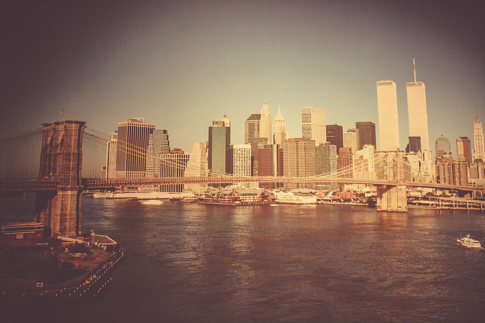

Founded July 1999
Press/Business Contact
info@bingaming.com
Tournament Games
- Super Smash Bros. 64
- Super Smash Bros. Melee
- Mario Kart 8 Deluxe
- Super Smash Bros. Ultimate
- Ultra Street Fighter II
TL;DR: A long time ago a dude started hosting video game tournaments in New York City.
The Best in New York City Official Tournament (BIN) was founded in 1999 by Cello, he wanted to hold a casual video game tournament with the original Super Smash Bros on Nintendo 64. Twenty three years later, we are still on the scene!
BIN is one of the seedlings on the East Coast that grew into the eSports scene we all know and love today!
We are primarily focused on fighting games and the Fighting Game Community but we have branched out to Racing sims (Mario Kart) and are researching the possibilty of having our first FPS tournament, with eyes on the horizon to sports genres and others.
In August of 2020 we decided to take our BIN tournaments online!
BIN held its first ever online tournament
in “Quaran-Teams”, a team based Super Smash Bros. Ultimate tournament, with this new digital venue came new participants. We had returning players from the local scene in NYC but also expanded out across the United States as well as the United Kingdom and the Netherlands. “Quaran-Teams” exceeded the expectations we had of this online endeavor as everything flowed smoothly and was streamed live via Cello’s Twitch channel.
Now that the online arena proved viable for us we held our “One Last Dance” Super Smash Bros. Ultimate singles tournament on December 27th to close out 2020. 2021 saw Cello's family grow so he tabled the eSports events for a short period and now we are anxiously looking forward to even greater success with our future events!
BIN Gaming | All Rights Reserved | 2022